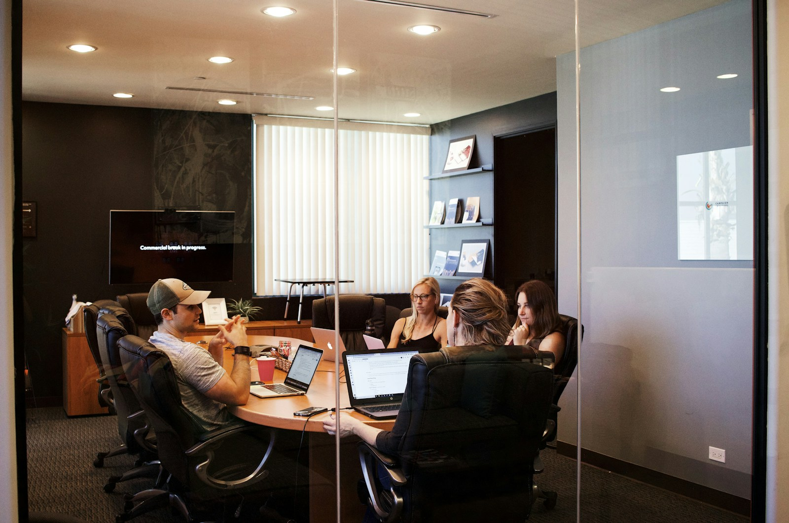

Operations Design
Map responsibilities, fix process gaps, and create repeatable operating rhythms.
Operational consulting for ambitious teams
Northstar Advisory helps growing companies improve delivery, hiring, and decision-making with practical systems that hold up under real pressure.

What we help teams do
Map responsibilities, fix process gaps, and create repeatable operating rhythms.
Turn shifting priorities into realistic plans with better handoffs and visibility.
Support managers with practical tools for onboarding, communication, and follow-through.
Build the internal structure needed to scale without sacrificing service quality.
How we work
Northstar Advisory partners with founders, operators, and department leads who need stronger execution. We start by understanding how work really moves through the business, then shape lightweight systems that improve communication, ownership, and consistency.
The goal is practical progress: clearer roles, fewer dropped details, and a delivery model that gives leaders more room to think ahead instead of constantly recovering.
Client perspective
“Northstar helped us replace reactive decision-making with a delivery rhythm the whole team could trust. We finished the quarter with better visibility and less burnout.”
Maya Patel, Operations Director at Alder & Finch
Ready to talk?